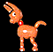

|
Sarah K. Ellerman Features Editor |
FAQ
In August of 1995. There was no net connection in the office yet, so for a few weeks we threw a ball around the office and reminisced about being able to check our email.
Seven years. My friends and I used to look over people's shoulders in the dorm labs to figure out new commands.
Blabbing in email and snooping around. When that, ahem, "important stuff" is done, I research trends and stories and technology for IU.
Editing our magazine, hiding from ringing phones, playing with my recalcitrant cat, observing things, listening to my friends' woes and writing stories.
No, but I do like potato chips crunched up on my ice cream.
The Squashed Bug Zoo alerted me to the fact that a disgusting topic combined with good writing and audience participation could, somehow, rock our world.
But right now, I like to read Bunnyhop and The Feminist Majority.
The net doesn't scare me. (But I have noticed that it scares many other people.)
Writing fiction made me love words. But being a clerk in the lingerie department at Kmart taught me she works hard for the money, so hard for it honey.
"The smallest feline is a masterpiece," said Da Vinci. And he would know, don't you think?
a lazy brainy smiling tomboyish geek girl."

The Burro is my favorite desk toy. He has the cutest donkey ears, and when I depress a button, the elastic strings inside his limbs go slack and he collapses. Then I can make him snap smartly to attention again. I use The Burro as a puppet expressing my secret desires. "Hey! The Burro says to stop throwing that ball around!"
An intravenous feed of Mountain Dew.
Word, Eudora, Quark, Netscape, and Hyperterminal... and sometimes sound files of Ralph "I bent my wookiee" Wiggum.
Umm, it's way too hard to name just one. But my ideal bookshelf would hold Gabriel Garcia Marquez's Love in the Time of Cholera, C.S. Lewis' books on Narnia, The Feminist Dictionary, Douglas Coupland's microserfs, anything by John Irving, The Giving Tree, and a thesaurus.
Fruity Pebbles, but I can't bring myself to buy them. They're sinfully candyish.
Liz Phair kicks everybody's ass. But Sugar, The Jayhawks, Carly Simon, The Rentals, Poi Dog Pondering, Prince, Cocteau Twins, Talking Heads, Manhattan Transfer, Portishead, and Randy Newman all have a special place... scattered on my bedroom floor. And WXRT's benefit CDs for women's shelters are amazing albums for an important cause.
And just in case you were wondering, you basically can't go wrong in life giving your money to good music and good causes.
When did you join Internet Underground?
How long have you been online?
What do you spend most of your time doing online?
How do you spend offline time?
Do you surf with links underlined?
What was the first site that really caught your attention?
What scares you about the Internet?
What best prepared you for your work?
Are your a dog or cat person? Or perhaps some alternative pet?
"In high school I was...
Describe your favorite monitor decoration/toy?
The ultimate online snack is...?
What applications are usually running on your computer?
What's your favorite book?
What's your favorite cereal, and when do you indulge?
What tunes play while you surf?